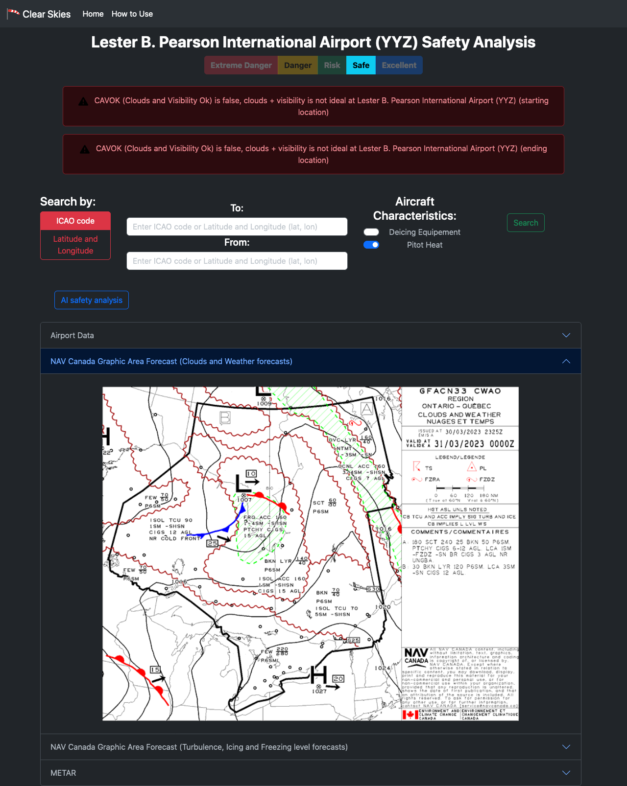
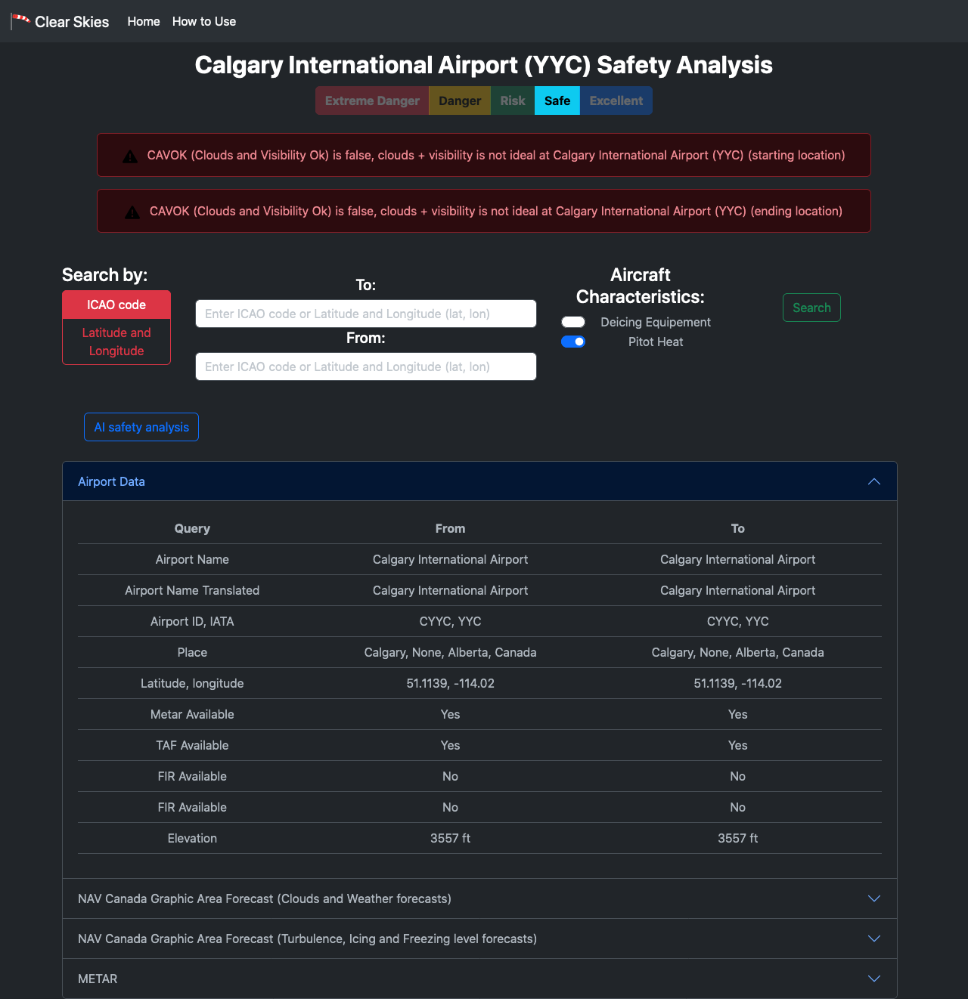

Gallery
Safety analysis of the CYYZ (Toronto Pearson) airport
Safety analysis of the CYYC (Calgary Int.) airport
Inspiration
As one of us was flying in a plane with his mentor, they heard a story; a few hours ago, a plane developed ice on their wings right before they landed. Although they landed safely, it was a scary and dangerous experience. We want to prevent these types of experiences from happening by making a site that warns General Aviation pilots of the weather conditions in different regions across airports with METAR.
What it does
Clear skies is a website that identifies the safety of flying on a route, on a particular date, using Meteorological Terminal Air Report (METAR) data from the METAR-TAF.com API. This website rates the safety of each route into five categories: extremely dangerous, dangerous, risk, safe, and excellent.
How we built it
The website was built using HTML with Flask. The backend was done with Python and Flask. The website was uploaded to GCP Cloud Run, and has the API token hidden with GCP Secrets. We later uploaded the website to a domain.com URL (clear-skies.tech).
Challenges we ran into
We ran into numerous challenges throughout the course of the hackathon. The first challenge we encountered was finding what METAR parameters were safe and what parameters weren’t. For example, a wind speed of 30 knots wasn’t safe, whereas a wind speed of 0 knots was perfectly safe according to flight experts. Another challenge we ran into was allowing the website to be viewed on devices with a smaller width, such as smartphones. We implemented a ‘hamburger’ menu to allow the website to be viewed on small devices, without affecting the functionality of the website. Prior to this feature being added, the website would be virtually unusable on small screens. Another big problem was implementing AI. Since it was our first time doing this, we were not entirely sure how we should add it. The last problem we ran into was hiding the key to the METAR API. When we published our code to Github, we would not want for there to be any sensitive information. We hid the API key by using GCP’s Secret tool. Other minor challenges included agreeing on some of the text added on the website.
Accomplishments that we're proud of
One of the accomplishments we are very proud of is connecting the METAR API to the website so it's accessible to you and us. We are also proud of uploading our website to a domain.com URL, this was the first time any of us have done this. Also, we are proud that we were able to manage our time well and work well as a team to successfully complete this project.
What we learned
During the making of this website, we learned how to use Flask and Bootstrap to make websites, and to create pipelines between APIs and websites. We also learned how to upload a website using domain.com. We also learned how to adjust DNS to authenticate our URL. In result, we were able to complete the project in a shorter period of time and add more functions to it.
What's next for Clear Skies
A next step for all of us would be to make the website look more professional and spend some more time on the layout and design of the site itself, as well as implementing the GPT-3.5 AI instead of using the Co:here AI to add more functionality to our website. Not only that, but we would also implement a system to make different units of measurement into the same (to avoid confusion), as an identical looking METAR may mean different things depending on where you’re flying. Finally, we would add keyboard shortcuts to allow users to go from one page to another easier.
Built With
- bootsrap
- domain.com
- flask
- gcp-cloud-run
- gcp-secrets
- html5
- metar-taf
- python